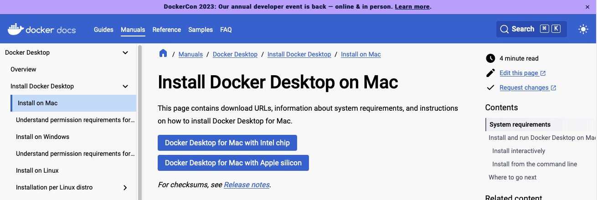

macOSのDocker上のUbuntuで動かす
Docker Desktop for Macのインストール
下記ページよりインストーラをダウンロードする。
Install Docker Desktop on Mac

インストーラを起動したら、ドラッグ&ドロップする

Dockerの動作確認
ターミナルを開き、下記を実行し、正常実行できればOK
Docker上のUbuntuでGazeboを動かす
Dockerコンテナ上のGUIやGPUを使用する場合の設定がPC環境によって異なるため、Gazeboなどを表示しようとすると難しい。TiryohさんはDocker＋ブラウザを利用するROS/ROS2のGUIをWebブラウザ経由でお手軽に試せるDockerfileを公開しましたの方法でPC依存なく実行できる方法を公開しているのでこれを利用する。
ターミナルを開き、フォルダとdocker-compose.ymlを作成します。
mkdir ~/vnc_docker_ros/
cd ~/vnc_docker_ros/
mkdir catkin_ws/
mkdir ros2_ws/
touch ~/vnc_docker_ros/docker-compose.yml
エディタで~/vnc_docker_ros/docker-compose.ymlを開き下記を記述します。
version: '3'
services:
ros-desktop-vnc:
# image: tiryoh/ros-desktop-vnc:kinetic
# image: tiryoh/ros-desktop-vnc:melodic
# image: tiryoh/ros-desktop-vnc:melodic-arm64
image: tiryoh/ros-desktop-vnc:noetic
# image: tiryoh/ros-desktop-vnc:noetic-arm64
# image: tiryoh/ros2-desktop-vnc:dashing
# image: tiryoh/ros2-desktop-vnc:dashing-arm64
# image: tiryoh/ros2-desktop-vnc:eloquent
# image: tiryoh/ros2-desktop-vnc:foxy
# image: tiryoh/ros2-desktop-vnc:galactic
# image: tiryoh/ros2-desktop-vnc:galactic-arm64
# image: tiryoh/ros2-desktop-vnc:humble
# image: tiryoh/ros2-desktop-vnc:iron
# image: tiryoh/ros2-desktop-vnc:rolling
ports:
- "6080:80"
shm_size: 512m
# volumes:
# - "./catkin_ws:/home/ubuntu/catkin_ws"
# - "./ros2_ws:/home/ubuntu/ros2_ws"
保存したら、~/vnc_docker_ros/上で下記コマンドで立ち上げる
起動したら、ブラウザでhttp://127.0.0.1:6080にアクセスすることでDockerコンテナ内のVNCクライアントが起動する。
Gazeboの動作確認
起動後は、左下角にあるアイコンをクリックし、ターミナルを開き、Gazeboを起動します。
終了させるときは、動作させているターミナルでctrl+C
コンテナを削除するには、~/vnc_docker_ros/上でdocker compose down